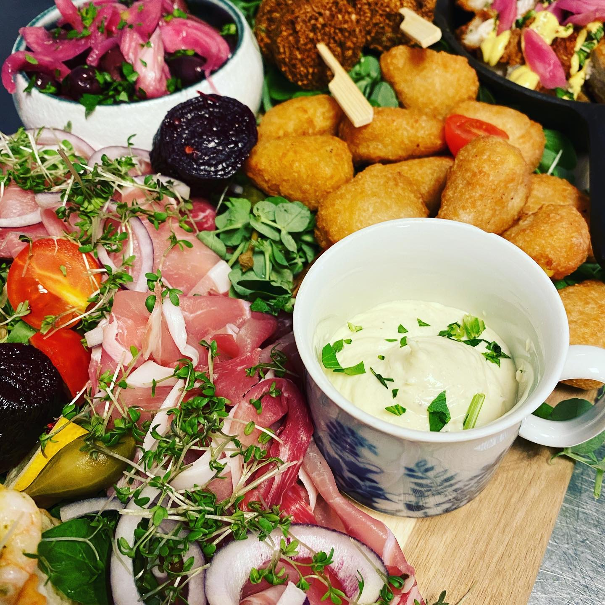
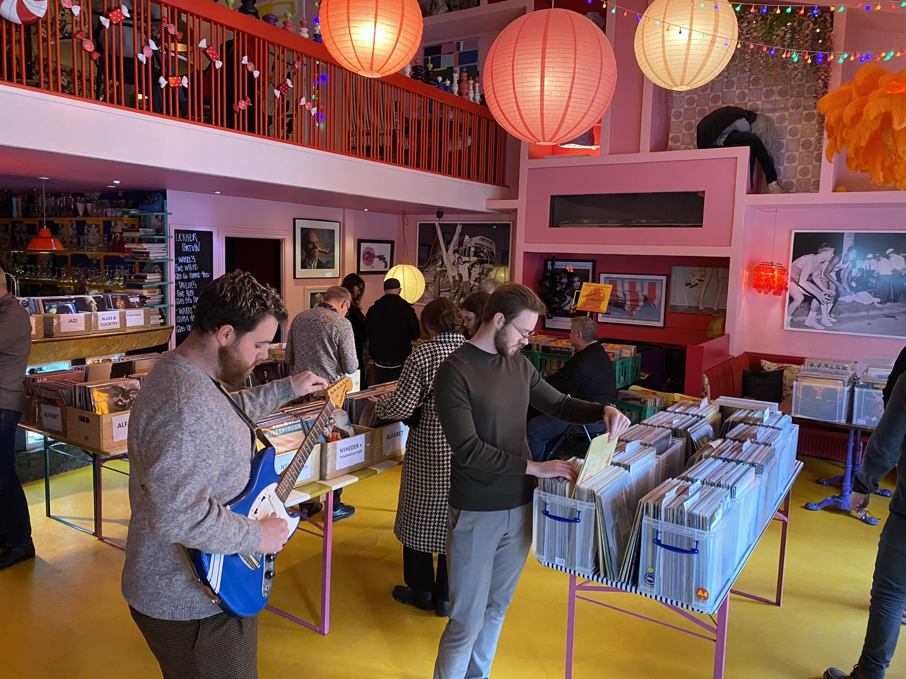

Colorful Food
We offer an exciting menu that, with the use of local ingredients, varies according to season and
mood. Whether you visit us in the café or have the food delivered directly to your door, we
guarantee taste experiences you won't forget. Try our flavorful evening menu.

Delicious Beverages
We offer beverages for every taste. Whether you like cold beer, soda, coffee, or tea. We have the
city's largest selection of red soda, and have a wide variety of beer and wine.

Exciting Events
At Café Ulla Terkelsen London, we hold regular events such as wine tastings, concerts, and quiz
nights. Keep an eye on our calendar, so you don't miss out on the next event. It's a great way to
spend an evening with friends.

Festive Evenings
From 9:00 PM, our cozy café transforms from a dining place into a magical and colorful party universe with great music. At the same time, you can enjoy our wide selection of exotic cocktails and classic drinks. We have something for every taste.